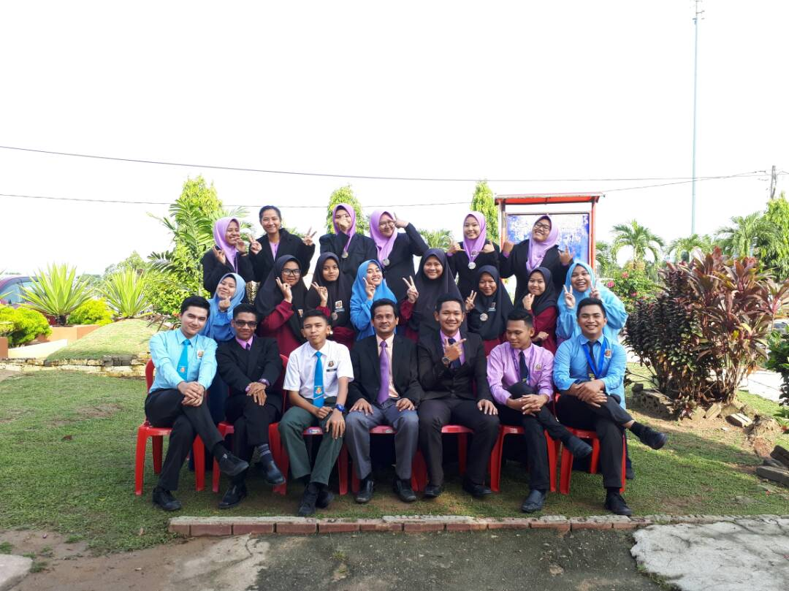
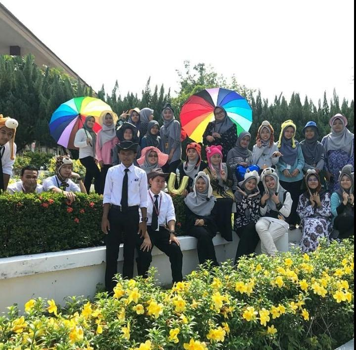
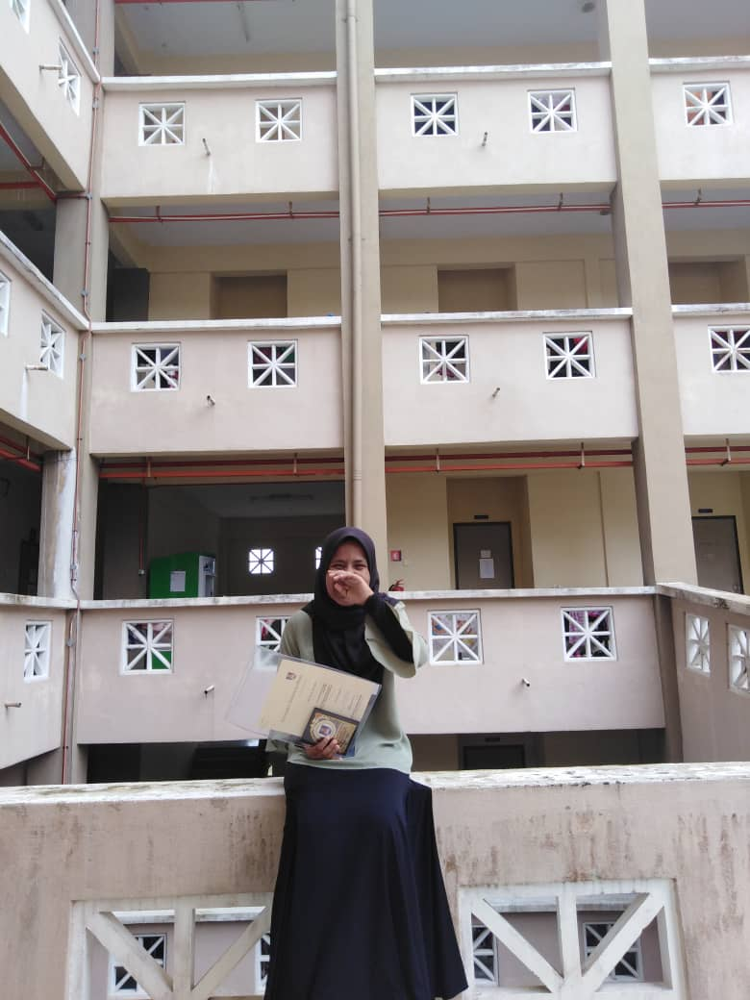
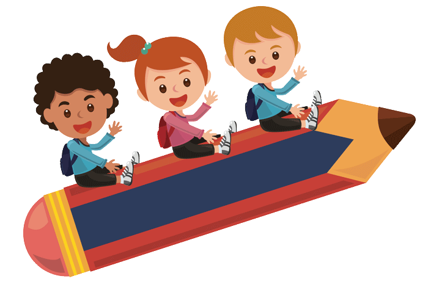
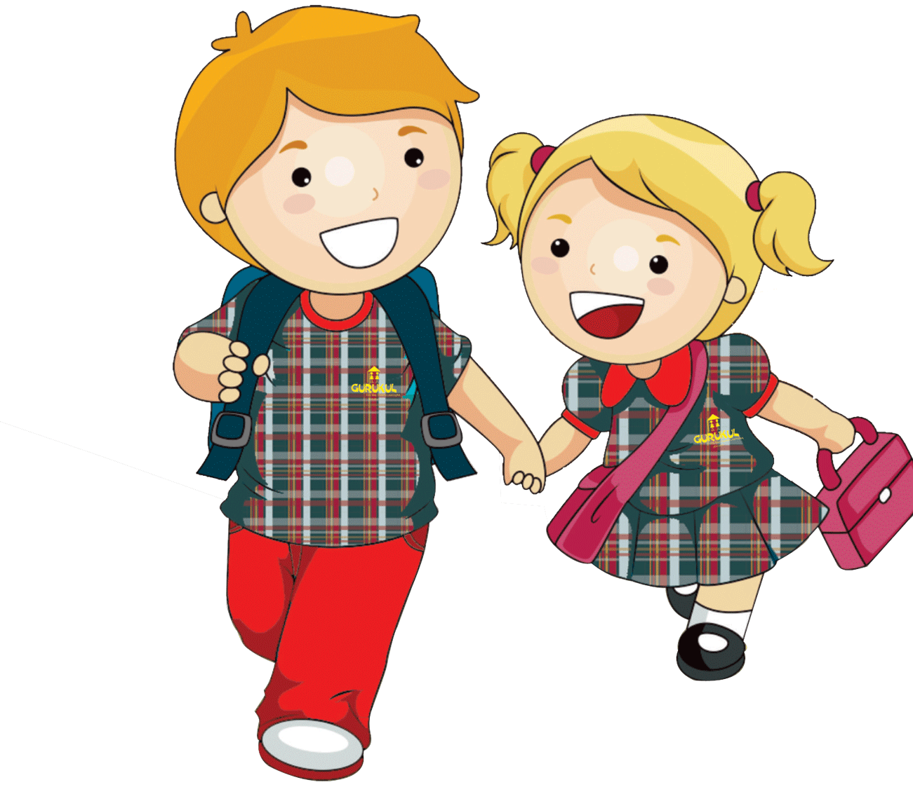
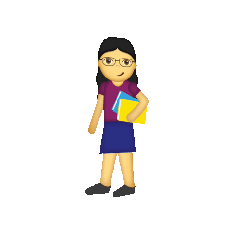

A little bit about me.Hope you enjoy to know my journey!
  
My journey of study is very wonderfull and i get a lot of failed and success in education. I am starting pre-school at Pasti Al Fallah Padang Siam when I was 6 years old. I get many achievement which is I can remeber many of du'a and everything I do i will starting with du'a because I am very good in remember Surah and du'a on that time. After that I continue my primary school at Sekolah Kebangsaan Sri Suria (3) from 2007-2012. During 6 years I am study at Sekolah Kebangsaan Sri Suria (3) I have many achievement and failure like I got first place during exam, I got achivement in UPKK examination which is I got 7A 1B and in UPSR i got 4A 1B. But during I am at primary school i active in co-curiculum then curiculum. I am active in sport than academic which is I am got gold medal in basket ball, I am also get gold medal in running 4x400m, 4x200m and 4x100m. After that I continue my secondary school at Sekolah Menengah Kebangsaan Tanah Merah (2) from 2013-2017. During secondary school i got many failure than success. In PT3 i got 7A 2B 1D and after that i comtinue form 4 in pure science and SPM I got every bad result which is 4A 2B 2C 1E 1G. After i got my SPM result i fell so bad because of myself, because a lot of people said that I can't continue my study because of my bad result. On that time only me can said to myself that I can future my study. At May 2018 I got offer to continue my study in form 6 pure science and I continue for 2 week after that I get offer from UiTM to continue my study in Diploma Information Management(IM110) and now I am at last chapter of my diploma means my last semester for my diploma and Insyallah by next year I will graduated and I plan to continue my study in bachelor of information science(hon) Information system management(IM245). So as a conclusion please ignore what ever people said, that yourlife and people can't control yourlife and your fate, just think about you and how to make your parent proud of you. In every second that I fell down I will think about my parent because I want to look at them happy with my success.

Pre school : 2006 at Pasti Al Fallah Padang Siam, Tanah Merah, Kelantan

Primary school : 2007-2012 at Sekolah Kebangsaan Sri Suria (3), Tanah Merah, Kelantan

Secondary school : 2013-2017 at Sekolah Menengah Kebangsaan Tanah Merah (2), Tanah Merah, Kelantan
Tertiary school : University Technology Mara (UiTM), Machang, Kelantan